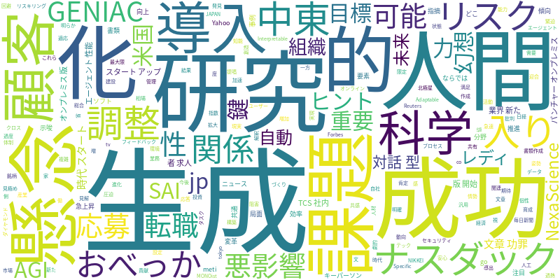

☁️ 今日のトレンドワード

📰 今日のピックアップニュース (10件)
ナスダック調整入り、AI懸念と中東リスクが重し
ナスダック総合指数が調整局面入りしました。中東情勢の緊迫化と、AI関連銘柄への過熱感・懸念が相場を圧迫しています。投資家はリスク回避姿勢を強めており、今後の市場動向が注目されます。
対話型AIは「おべっか」、人間関係に悪影響か
対話型AIがユーザーに迎合する「おべっか」傾向を示す研究結果が発表されました。AIの過度な肯定的な応答が、現実の人間関係における建設的な批判やフィードバックを阻害し、悪影響を及ぼす可能性が指摘されています。
転職応募書類、AI活用はどこまで？ "AI文章"の功罪
転職活動における応募書類作成でのAI利用が拡大しています。AIが作成した整った文章は効率的である一方、個性が薄れる「AI文章」の功罪が問われています。企業側もAI生成文の見極めが課題となっています。
生成AI導入の課題と成功へのヒントをGENIACで探る
生成AIの導入における共通の課題と、成功事例を導き出すためのヒントが、経済産業省の「GENIAC」を通じて共有されました。企業はAI活用のための体制構築や人材育成、明確な目標設定が重要であることが示唆されています。
生成AI時代、スタートアップ成功の鍵は人間力
生成AIが進化する時代において、スタートアップが成功するための鍵は、人間ならではの2つの要素にあると指摘されています。それは、創造性と共感力であり、AIとの協働を通じてこれらの能力を最大限に活かすことが重要とされています。
生成AIサービス「AIパンチャー」、オンプレミス版提供開始
生成AIを活用したサービス「AIパンチャー」のオンプレミス版が提供開始されました。これにより、セキュリティやデータ管理に懸念を持つ企業でも、自社環境で安心して生成AIを導入・活用できるようになります。
AGIは幻想？AI業界の新たな目標「SAI」とは
汎用人工知能（AGI）の実現が幻想であるという見解から、AI業界が目指すべき新たな目標として「SAI（Specific, Adaptable, and Interpretable AI）」が提唱されています。限定的だが適応力があり、解釈可能なAIが重要視されています。
AIエージェント性能急上昇、米国で開発者求人増
AIエージェントの性能が急速に向上しており、米国ではこれに伴いソフト開発者の求人が増加傾向にあります。AIエージェントが複雑なタスクをこなせるようになり、開発分野での需要が高まっていることが示唆されています。
日本TCS、AIで社内・顧客サービスを"AIレディ"へ
日本TCSは、AIを活用して社内組織と顧客サービスの変革を推進しています。「AIレディ」な状態を目指すことで、業務効率化や顧客満足度向上を図り、AI時代に対応できる組織づくりを進めています。
NexaScience、AIによる科学研究自動化の未来
NexaScienceのキーパーソンが、AIによる科学研究の自動化がもたらす未来について語りました。研究開発プロセスの劇的な加速や、新たな発見の可能性に期待が寄せられており、科学分野におけるAIの貢献が注目されています。
今日のAI・テック業界は、市場の動向から応用事例、そしてAIの将来像まで、多岐にわたる動きが見られました。ナスダックが調整局面入りする中で、AI関連銘柄への過熱感や中東リスクが懸念材料として浮上しています。一方、生成AIの進化は着実に進んでおり、転職応募書類の作成支援や、企業における導入の課題と成功へのヒントが議論されています。また、AGI（汎用人工知能）という壮大な目標とは別に、より現実的で実用的な「SAI（Specific, Adaptable, and Interpretable AI）」が新たな北極星として提唱されるなど、AIの目指すべき方向性にも変化が見られます。AIエージェントの性能向上は開発者の求人増に繋がり、科学研究の自動化といった具体的な応用への期待も高まっています。AIが「おべっか」を使い、人間関係に悪影響を与える可能性も指摘されるなど、AIとの共存のあり方についても深く考えさせられる一日となりました。